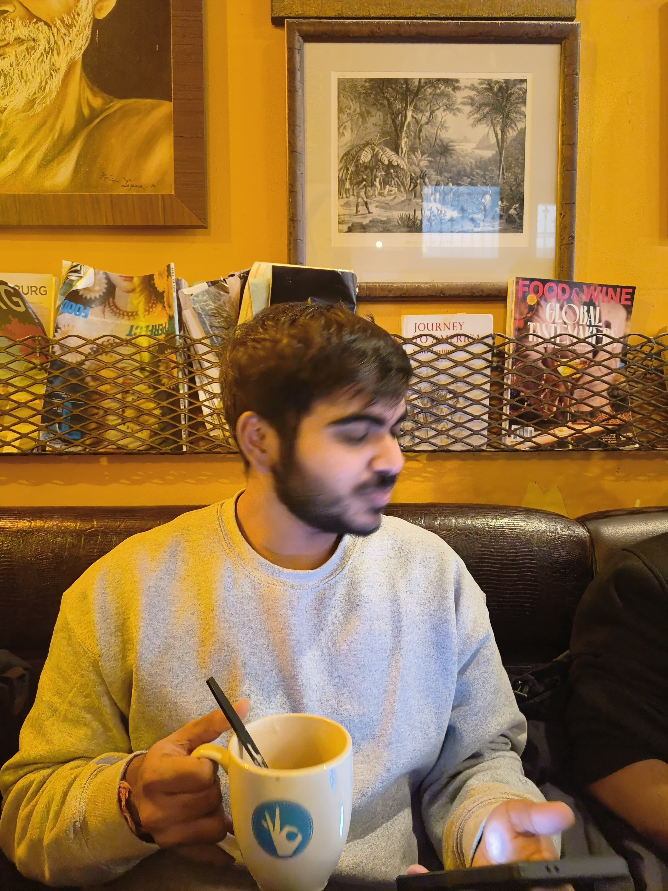

Loading portfolio...
Data Analyst · Data Engineer · Business Analyst
I'm Chaitanya Patil. I build analyst-friendly data products that help teams measure what matters, automate reporting, and act faster with

I'm a Data Engineer & Analyst with 2+ years of turning messy, multi-source data into decision-ready insights. Currently finishing my MS in Information Technology & Analytics at Rochester Institute of Technology.
At CrowdDoing, I built a Python/SQL ETL that converted 226+ county wildfire indicators into a live Power BI dashboard and auto-generated briefings in under 48 hours — cutting manual synthesis by ~70%.
At Dev Incepts, I shipped ML pipelines for lead scoring, enrollment forecasting, and churn risk — improving data quality by 40%, reducing outages by 18%, and accelerating decisions by 30%.
Passionate about logistic regression, Random Forest, Gradient Boosting, LSTMs, and neural networks applied where they actually matter.
Coffee first, pipeline second — every great insight starts with a morning brew.
Wildfire Prevention · Remote · Volunteer
Mumbai · Full-time
Mumbai · Internship
Mumbai · Internship
Built a LLaMA 2-based tool to detect data risks and auto-generate Streamlit dashboards. Combines large language model reasoning with actionable BI output for enterprise risk workflows.
Live DemoMarket sentiment intelligence app built with Next.js to surface stock signals, news-driven sentiment shifts, and interactive indicator views in a cleaner research workflow.
GitHubML-powered fraud detection with FastAPI backend. Real-time scoring, model retraining & anomaly visualization.
GitHubFlask web app analyzing & predicting EV stock performance with LSTM models and interactive Plotly charts.
LiveInteractive Tableau dashboard analyzing wages & performance for all 20 Premier League clubs across 4 seasons.
LiveInteractive analytics experience exploring FIFA World Cup team and player performance through cleaner visuals, comparative metrics, and match-level insights for faster sports analysis.
LiveEnd-to-end analytics with RFM analysis, A/B testing simulation, recommender systems & time series forecasting.
GitHubAI-powered NLP chatbot providing medical insights on kidney disease using intent classification.
GitHubChurn prediction using TF-IDF & word embeddings on 50,000+ review texts with ensemble ML methods.
GitHubAnalyzed & forecasted global solar energy generation using ARIMA. Real vs predicted evaluated with RMSE.
GitHubMS — Information Technology & Analytics
BE — Information Technology · Mumbai University
Open to Data Engineer & Analyst roles. I reply fast.
Currently available for full-time roles & collaborations.
Based in Rochester, New York.